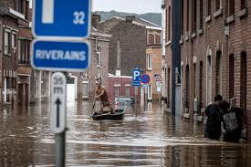
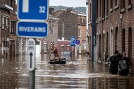

WWF, in partnership with the US Agency for International Development Office of US Foreign Disaster Assistance (USAID/OFDA), developed the Natural and Nature-based Flood Management: A Green Guide, also called the Flood Green Guide, to support the use of natural and nature-based methods for flood risk management. The guide is also supported by a training program and resource library
Flood Warning System Solution
A flood warning system is an early flood monitoring solution that deploys accurate and well-maintained sensing instruments, like rain gauges, water level sensors, and flow rate sensors
Monitoring system – monitors the actual hydro-meteorological situation (total precipitation, water levels in rivers)
Warning system with sirens – provides early warning for the population in endangered areas based on the information
delivered
by a monitoring system
Notification system – informs the responsible persons through a voice or text message about an emergency and at the same
me
summons the personnel to emergency management meetngs
How do I protect My health in a Flood?
‣Chlorinating or boiling all water for drinking and food preparation.
‣Promoting good hygienic practices and safe food preparation techniques.
‣Avoiding walking or driving through flooded areas and standing water.
‣Throwing away any food that has come in contact with floodwater.
‣Safely cleaning your home if it has come in contact with floodwater.
‣Protect against mosquitos.
how to grow food during a flood
Growing crops on elevated or raised beds can significantly improve soil drainage, and soils with high amounts of clay can be amended with sand or organic matter to improve drainage. If a hardpan restricts water infiltration, a broadfork or subsoiler can be used to loosen the soil
Gallery
 
